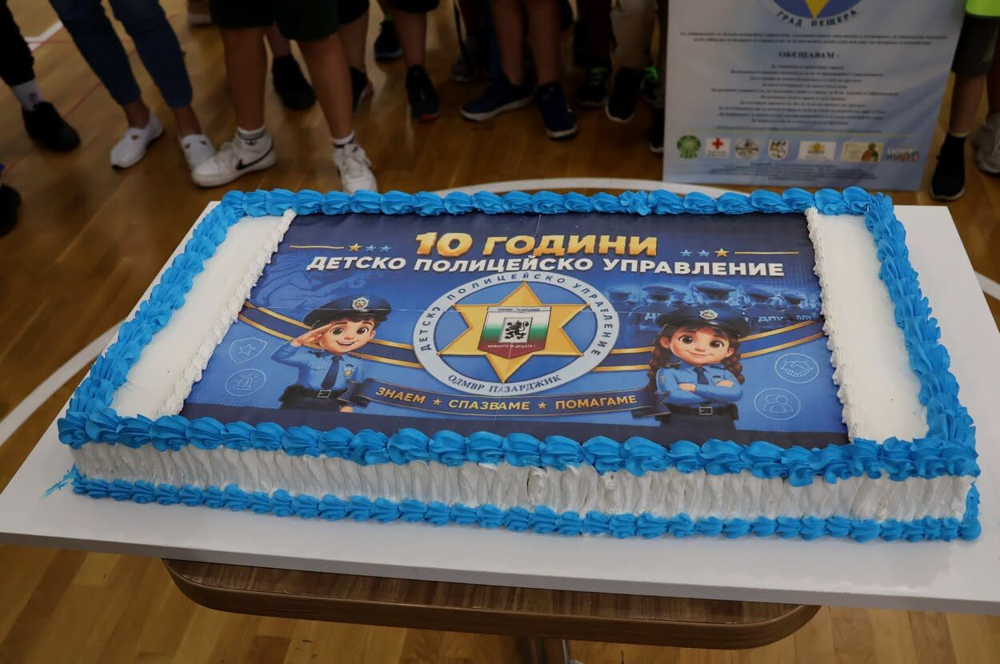

Добрият пример
The Good Example
Детско полицейско управление — Велинград. Как изглежда превенцията, когато полицаят е познато лице, а не униформа отдалеч.
The Children’s Police Department in Velingrad. What prevention looks like when the officer is a familiar face rather than a uniform seen from afar.
Детските полицейски управления събират деца от началния и прогимназиалния курс в редовни занимания с униформени служители — за пътна безопасност, за това какво е престъпление, какво е тормоз и към кого да се обърнеш.
Children’s Police Departments bring primary and lower-secondary pupils into regular sessions with uniformed officers — on road safety, on what counts as a crime, on what bullying is and whom to turn to.
Смисълът им не е да изглеждат добре на снимка. Децата, които познават полицая по име, се обръщат към него, когато нещо се обърка — и това е цялата разлика.
Their point is not to look good in a photograph. Children who know the officer by name turn to him when something goes wrong — and that is the whole difference.

Видео: „Доброволци от Детското полицейско управление във Велинград създадоха обучителен клип“, публикувано в канала znamee Pazardjik.Video: “Volunteers from the Children’s Police Department in Velingrad made a training clip”, published on the znamee Pazardjik channel.